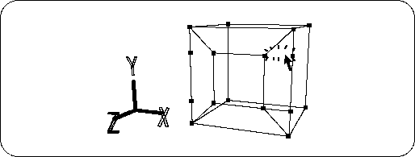
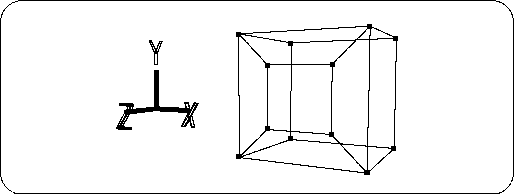

Return to previous page | Return to menu | Go to next page
[Mesh] → [Edge], right mouse button (Remove edge)
Then, click the four edges as shown in the figure to delete them (Figure 2-10).

Furthermore, delete the extra vertices and do the following (Figure 2-11).

If the work fails, you can go back to the previous stage with the "U" key + left mouse button . The number of times to return is
[History] → [Set up]
You can set it with. For beginners, it is recommended to set it to about 10 times.
Next, make the screen part of the TV monitor.